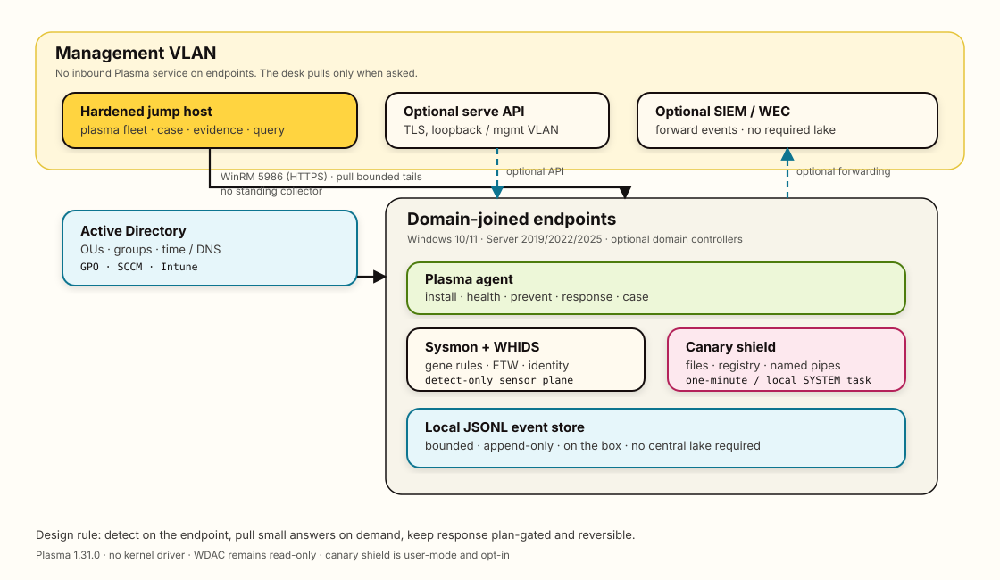

Enterprise deployment in an Active Directory domain¶
This guide is for a Windows estate joined to an Active Directory domain: servers, domain controllers, and managed workstations. It covers design, prerequisites, installation, configuration, domain rollout, canary-shield deployment, validation, operations and rollback.
Plasma is per-endpoint software with a desk-side correlation tool. It does not require a central server, a database or an internet-facing service. The “desk” is a hardened jump host or management workstation that pulls bounded event tails from endpoints only when asked.
Reference architecture¶

Domain controllers are supported as endpoints, but Kerberos events (4768/4769/4770/4771) exist only on a KDC. A member server reporting zero Kerberos events is not broken; it is not a KDC.
1. Design decisions¶
| Decision | Recommended default | Why |
|---|---|---|
| Installation mode | MSI, FULL (Sysmon + WHIDS) | Detection-first; MINIMAL is a deliberate exception |
| Management transport | WinRM over HTTPS (5986) | NTLM over HTTP is relay-prone; Plasma refuses insecure WinRM by default |
| Desk placement | Hardened jump host in the management VLAN | No inbound listener on endpoints |
| Update ring | canary pilot OU, then broad |
Limits a bad release to the pilot |
| Event retention | 7–30 days, size-capped | Bounded local store, not a lake |
| Canary placement | User-data shares and Documents | Impact detection where ransomware acts |
| Canary shield | Pilot OU first, audit/dry-run before arm | Active kill needs a controlled pilot |
| Pipe canaries | One per user/server ring, pilot first | A connecting client is a strong signal, but scanners need allowlisting |
| Prevention | Audit first, then enforce per control | A bad AppLocker/CFA policy can break a business app |
| Central SIEM | Optional forwarding of local JSONL | Plasma does not require one |
2. Prerequisites¶
Active Directory¶
- Domain-joined Windows 10/11 or Windows Server 2019/2022/2025.
- An OU for pilot hosts and an OU for broad rollout.
- A security group for Plasma administrators and a separate group for the desk/fleet operators.
- Time synchronization (Kerberos and event correlation depend on it).
- DNS resolution for management names and any canary token suffix.
- If using the fleet desk over WinRM, a service account or gMSA with local
administrator rights on the managed hosts. The password is supplied via an
environment variable (
password_env); never infleet.json.
Windows host¶
- PowerShell 5.1 or later.
- Sysmon installed and logging. WHIDS makes the Sysmon service dependent on the WHIDS service at install.
- WHIDS 1.7.0 payload for FULL mode.
- Local administrator (or SYSTEM) for install, services, Sysmon config and scheduled tasks.
- Windows Firewall:
- inbound WinRM 5986 from the management VLAN only;
- inbound RDP 3389 from the operator jump host only;
- no inbound Plasma service is required.
- Outbound HTTPS 443 for updates and Sysmon acquisition, or an internal mirror.
- Event log sizing: Security and Sysmon at least 512 MB each on servers, 256 MB on workstations.
Network¶
| Source | Destination | Port | Purpose |
|---|---|---|---|
| Jump host | endpoint | TCP 5986 | WinRM HTTPS |
| Operator | jump host | TCP 3389 | RDP to the desk |
| Endpoint | update/GitHub | TCP 443 | Signed self-update |
| Endpoint | DNS | UDP/TCP 53 | Name resolution, DNS canary tokens |
| Endpoint | SIEM/collector | TCP 443/6514 | Optional forwarding |
| Canary collector | endpoint/browser | TCP 8088 | Optional HTTP token collector |
Do not expose plasma serve directly to user networks. Bind it to loopback
or the management VLAN and use TLS with a certificate from the enterprise
PKI.
3. Install Plasma¶
Manual install (pilot)¶
# 1. Download the release assets and verify them
Get-FileHash .\plasma-1.25.0-windows-x64.exe -Algorithm SHA256
Get-Content .\SHA256SUMS
Get-AuthenticodeSignature .\plasma-1.25.0-windows-x64.exe | Format-List
# 2. Dry-run the install plan
.\plasma-1.25.0-windows-x64.exe install --dry-run
# 3. Install
.\plasma-1.25.0-windows-x64.exe install
# 4. Verify
plasma --version
plasma health
plasma status
plasma whids status
The MSI equivalent:
msiexec /i plasma-1.25.0-windows-x64.msi /qn /norestart /l*v C:\Windows\Temp\plasma-msi.log
The installer:
- verifies the embedded manifest and payload hashes;
- chooses FULL or MINIMAL;
- stages the instance, WHIDS payload and Sysmon baseline;
- writes
C:\ProgramData\Plasma\config.json; - registers
PlasmaWatch,PlasmaUpdate, the WHIDS watchdog and the identity-pull task; - adds
AtStartupandStartWhenAvailabletoPlasmaWatch,PlasmaWhidsWatchdogand, when armed,PlasmaCanaryShield, so protection resumes immediately after reboot; - flips the
currentjunction.
Domain rollout with Group Policy¶
Use a computer startup script or a GPO-delivered scheduled task. Do not use a user logon script: the install needs SYSTEM.
- Put the signed MSI and
SHA256SUMSon a read-only DFS share. - Create a startup script that verifies the SHA-256 before running MSI.
- Target the pilot OU first.
- Use a WMI filter or security-group filter for the pilot ring.
- After the pilot window, link the same GPO to the broad OU.
Example startup script:
$src = '\\dfs\software\plasma\plasma-1.25.0-windows-x64.msi'
$sum = '\\dfs\software\plasma\SHA256SUMS'
$expected = (Get-Content $sum | Select-String 'plasma-1.25.0-windows-x64.msi').Line.Split()[0]
$actual = (Get-FileHash $src -Algorithm SHA256).Hash.ToLower()
if ($actual -ne $expected.ToLower()) { throw 'Plasma MSI hash mismatch' }
Start-Process msiexec.exe -ArgumentList "/i `"$src`" /qn /norestart" -Wait
SCCM / Intune¶
- Detection method: file
C:\ProgramData\Plasma\bin\plasma.exeexists andplasma --versionreturns the expected version. - Install command:
msiexec /i plasma-1.25.0-windows-x64.msi /qn /norestart - Return codes:
0and3010success;1641reboot initiated. - Requirement: 64-bit Windows, PowerShell 5.1, local administrator.
- Deploy to a pilot collection first; use the same ring tags as the GPO path.
MINIMAL mode¶
Use MINIMAL only where Sysmon/WHIDS cannot be installed:
.\plasma-1.25.0-windows-x64.exe install --skip-whids
MINIMAL still provides identity events, the ETW tap, DTrace (where present),
canaries, memory scanning and the investigation/case tools. It does not
provide the always-on gene-rule detection plane. health and coverage
will name the gap.
4. Configure¶
The primary file is:
C:\ProgramData\Plasma\config.json
A production-oriented example:
{
"version": "1.25.0",
"events_path": "C:\\ProgramData\\Plasma\\data\\events.jsonl",
"sensors": {
"whids": {"status": "active", "min_version": "1.7.0"},
"sysmon": {"status": "active"}
},
"retention": {"max_mb": 512, "keep_files": 4},
"response": {
"enabled": true,
"mode": "enforce",
"min_score": 9,
"max_actions_per_run": 2,
"cooldown_seconds": 1800
},
"canary": {
"accounts": ["svc-print-archive"]
},
"update": {"ring": "broad"},
"serve": {"bind": "127.0.0.1", "port": 9999}
}
Rules:
- Keep
events_pathon a local disk, not a network share. - Protect the root with SYSTEM + Administrators only; the installer does this.
response.mode: enforcestill uses the policy allowlist, score floor, action cap, cooldown, approval queue and kill switch.canary.accountsmust be accounts that no legitimate process uses.update.ringis one ofcanary,broad,rollback.- Secrets do not belong in config files. Use environment variables named by
token_env/password_env.
Environment variables¶
| Variable | Purpose |
|---|---|
PLASMA_EVENTS |
Override the event store for probes |
PLASMA_SERVE_API_KEY |
HTTP API key |
PLASMA_SCOPES |
MCP scopes |
PLASMA_TENANT |
MCP tenant |
PLASMA_GITHUB_TOKEN |
Private release repository |
PLASMA_TG_TOKEN |
Telegram notification token |
PLASMA_SIGNER_THUMBPRINTS |
Allowed update signers |
5. Domain GPO baseline¶
| Policy | Setting |
|---|---|
| WinRM | Allow WinRM; HTTPS listener with enterprise PKI certificate; firewall scope management VLAN |
| RDP | Enabled, NLA required, TLS security layer, restricted source |
| Audit | Logon/logoff success+failure, account management, process creation, object access as required |
| PowerShell | Script block logging, module logging, constrained language where compatible |
| Defender | Real-time on, ASR audit first, CFA audit then block, Network Protection audit then block |
| AppLocker/WDAC | Audit first; pilot OU before broad |
| Event logs | Security and Sysmon size/retention per host role |
| Time | Domain hierarchy; reliable external source on the PDC |
| Firewall | Outbound 443 to update/SIEM only; inbound management only |
Do not apply CFA block or WDAC enforce to the whole domain in one step.
plasma prevent posture and the pilot ring exist to prevent exactly that.
6. Deploy the fleet desk¶
On a hardened jump host:
pip install 'plasma-edr[desk]'
# or use the signed plasma.exe and the desk-side extras
$env:WS1PW = Read-Host -AsSecureString | ConvertFrom-SecureString -AsPlainText
plasma fleet scan --inventory C:\PlasmaDesk\fleet.json --case incident-42 --window 3600
plasma fleet report --case incident-42
fleet.json:
{
"hosts": [
{
"name": "WS1",
"transport": "winrm",
"endpoint": "https://ws1.corp.example:5986/wsman",
"username": "CORP\\svc-plasma-ro",
"password_env": "WS1PW",
"events_path": "C:\\ProgramData\\Plasma\\data\\events.jsonl"
},
{
"name": "WS2",
"transport": "file",
"events_path": "D:\\Exports\\WS2\\events.jsonl"
}
]
}
The desk pulls a capped tail, correlates deterministic joins and writes a case dossier. Credentials stay in the environment, never in the inventory or the case directory.
7. Deploy the active canary shield¶
The shield turns file and registry canaries into a narrow active defence:
a process that creates, deletes or registry-writes a canary is identified
from Sysmon and killed after verification. Named-pipe canaries add a local
listener: a client that connects to the decoy pipe is identified by PID and
killed after the same verification. A pure in-place overwrite with no
create/delete has no Sysmon write event; canary verify still records the
hash change, but without process attribution. Plan the shield around
ransomware behaviour (create encrypted copy, delete original) and registry
tamper, not around every possible file edit.
7.1 Deploy canaries¶
plasma canary deploy --dir D:\Shares\Finance --dir D:\Shares\HR
plasma canary registry deploy --hive HKCU --count 1
plasma canary registry deploy --hive HKLM --count 1
plasma canary pipe deploy --count 1
plasma canary verify
Use realistic user-data shares. A canary in an empty folder called “Canaries” is not a canary; it is a signpost.
7.2 Preview the shield¶
plasma canary shield status
plasma canary shield install
The preview shows the file and registry conditions added to the Sysmon config and the SYSTEM task that will be registered. It does not write.
7.3 Arm in the pilot OU¶
plasma canary shield install --apply --plan 4 --reason "IR-2026-042 pilot"
plasma canary shield status
Get-ScheduledTask -TaskName PlasmaCanaryShield
The task runs every minute as SYSTEM. Each sweep:
- reads Sysmon FileCreate/FileDelete and RegistryEvent rows in the window;
- matches only the recorded canary basenames and registry fragments;
- refuses PID 0/4, protected processes, Plasma itself, Explorer and common backup/AV/system processes;
- verifies the PID still exists and still has the recorded image;
- kills the process, journals the decision and caps kills per sweep.
7.4 Prove it in a maintenance window¶
# start a benign child process that writes the canary, then sleeps
$canary = (Get-Content C:\ProgramData\Plasma\canaries.json -Raw | ConvertFrom-Json).canaries[0].path
$p = Start-Process powershell -PassThru -ArgumentList @(
'-NoProfile','-Command',"Set-Content -LiteralPath '$canary' -Value test; Start-Sleep 120")
Start-Sleep 2
plasma canary shield sweep --since-minutes 5 --apply --reason "shield drill"
Get-Process -Id $p.Id -ErrorAction SilentlyContinue
The process should be gone and canary-shield-journal.jsonl should contain
the kill with the canary path, PID, image and verification result. A read
(Get-Content $canary) must produce no kill; an Explorer delete must be
skipped as trusted.
7.5 Named-pipe canary¶
plasma canary pipe deploy --count 1
plasma canary pipe install
plasma canary pipe install --apply --plan 6 --reason "IR-2026-042 pipe pilot"
plasma canary pipe status
The listener runs at boot as SYSTEM and restarts on failure. A client that
connects to the decoy pipe is identified with
GetNamedPipeClientProcessId; a scanner that only enumerates pipes is not
touched. Protected processes are refused, Plasma/Defender/backup/system are
trusted, and a dry-run listener records without killing. Each decision is
written to canary-pipe-journal.jsonl; canary pipe status reports the live
connection and kill counters, so you do not have to wait for the task to stop.
A pipe is a stronger trigger than a file canary in one respect — the client must actively connect — but it also carries a higher operational risk: security scanners and some management agents probe pipes. Pilot it in a small ring, watch the journal for skips, and allowlist your own tooling before arming broadly.
7.6 Disarm¶
plasma canary shield uninstall --apply --plan 5 --reason "change window"
plasma canary pipe uninstall --apply --plan 7 --reason "change window"
This unregisters the tasks and restores the previous Sysmon config.
8. Post-install validation¶
plasma health
plasma status
plasma whids status
plasma watch once
plasma coverage
plasma query --kind alert --since 24h --count-by process
plasma detect test
plasma prevent posture
plasma canary shield status
Expected on a healthy FULL node:
health.status = ok;whids_service = Running,sysmon_service = Running;sensor_heartbeatwithin the store window;- coverage rollup reported, with named blind spots;
detect test10/10;prevent posturenames gaps rather than inventing success.
9. SIEM and evidence¶
- Forward
events.jsonland WHIDS alerts to the SIEM if required; the local store remains the source of truth for the endpoint. - Forward Security/Sysmon channels with Windows Event Forwarding if the estate already has it.
- Use
plasma casefor investigations;case seal+case verifyproduces tamper-evident evidence. - Use
plasma assurance sbom,safety-case,support-bundleandevidence exportfor audit packages. Support bundles are redacted.
10. Operations¶
| Task | Command |
|---|---|
| Daily health | plasma health, plasma watch once |
| Store hygiene | plasma store stats, store rotate, store compact |
| Update rings | plasma ring status, update auto --check-only |
| Rollback | plasma rollback |
| Prevention drift | plasma prevent posture, prevent status |
| Canary integrity | plasma canary verify, canary shield status |
| Case review | plasma case list, case timeline, case report |
| Fleet sweep | plasma fleet scan --inventory fleet.json --case ... |
Keep the kill switch tested. A kill switch that has never been exercised is a hope, not a control.
11. Troubleshooting¶
| Symptom | Check |
|---|---|
| WHIDS service hangs at StartPending | plasma whids diagnose; prune the dump tree |
| No Sysmon events | Get-Service Sysmon64; plasma health; Sysmon config |
| WinRM login fails | HTTPS listener, certificate trust, firewall, password_env |
| Fleet pull returns 0 rows | endpoint events_path, service heartbeat |
| Canary shield never fires | Sysmon config includes, canary shield status, task state |
| Shield skips a process | journal reason: trusted, protected, stale PID, max kills |
| Prevention apply fails | policy-managed host or tamper protection; prevent posture |
| Update fails | signer pin, SHA256SUMS, ring, kill switch, update-journal.jsonl |
| Disk growth | store stats; retention; WHIDS dump prune |
12. Enterprise checklist¶
- [ ] Pilot OU and broad OU defined.
- [ ] Signed MSI verified by SHA-256 and Authenticode.
- [ ] WinRM HTTPS with enterprise PKI; no HTTP WinRM outside a controlled lab.
- [ ] Sysmon and WHIDS running on FULL nodes.
- [ ] Root ACL SYSTEM + Administrators only.
- [ ] Event store on local disk, retention set.
- [ ] Response policy reviewed; kill switch tested.
- [ ] Prevention controls piloted in audit mode.
- [ ] Canaries deployed to user-data shares.
- [ ] Canary shield previewed, armed in pilot, and drill-proven.
- [ ] Fleet inventory uses
password_env, never inline secrets. - [ ] SIEM forwarding, if used, tested.
- [ ] Case seal/verify tested.
- [ ] Update ring and rollback tested.
- [ ] Blind spots accepted and documented.
13. Plugin distribution¶
Treat plugins like any other signed software:
- Build and sign in a controlled pipeline; keep the private key offline.
- Publish the payload plus
plugin.json,SIGNATUREand the publisher's public key. - Install with
plasma plugin install ... --pubkey publisher.pem --enablefrom the same GPO/SCCM/Intune workflow that installs Plasma. - Pin the publisher key in the deployment script; do not accept an embedded key without a pinned expectation.
- Roll out to the pilot OU first.
plugin verifyandplugin healthare the post-install checks. - Disable a misbehaving plugin with
plasma plugin disable; remove it withplasma plugin remove.
Responder plugins add actions; they do not bypass the plan/approval gate.
Review each action's argv and permissions.filesystem before enabling it.
14. Limits¶
- No kernel driver: kernel malware, malicious drivers and direct syscalls are outside the claim.
- Canary shield is near-real-time (one-minute task), not in-kernel.
- No central console; the desk is pull-based by design.
- WDAC remains read-only in Plasma.
- Independent MITRE/red-team validation and large-scale soak testing are not included.